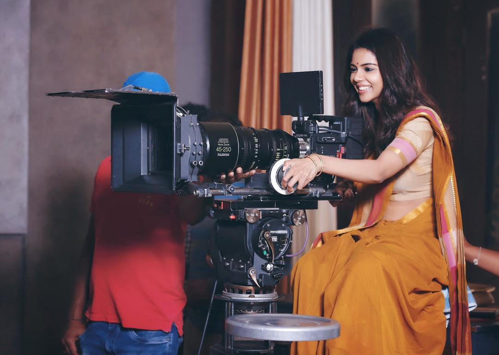

Kalyani Priyadarshan is an acclaimed Indian actress who primarily works in Malayalam, Tamil, and Telugu films. She is the daughter of celebrated filmmaker Priyadarshan and actress Lissy. Kalyani made her acting debut in the Telugu film "Hello" (2017), which earned her critical recognition.
Over the years, she has delivered versatile performances in films like "Varane Avashyamund", "Hridayam", and "Bro Daddy". Known for her charm and natural acting, she has become one of the most sought-after young actresses in South Indian cinema.
Debuted with Hello (2017) and gained recognition in Malayalam cinema with Varane Avashyamund (2020) and Hridayam (2022).
Winner of several awards including SIIMA and Filmfare South for her impactful performances across languages.
Apart from acting, she has studied architecture and has worked behind the scenes in film production before stepping into acting.